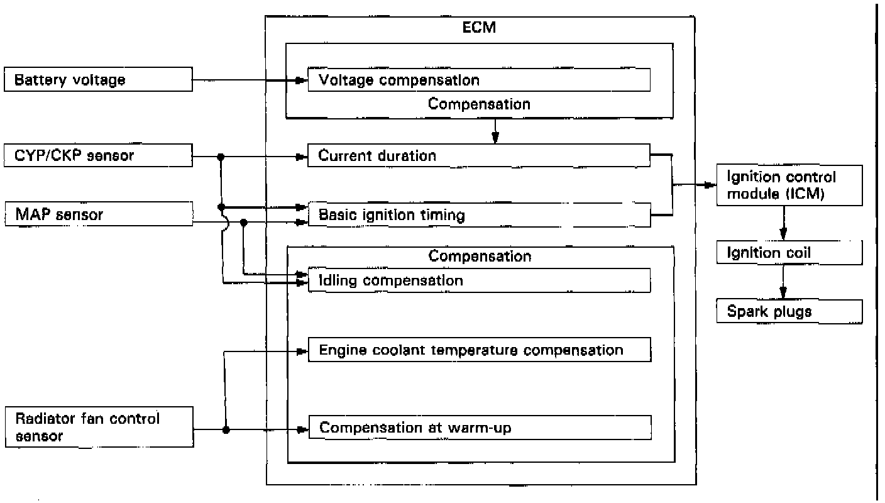
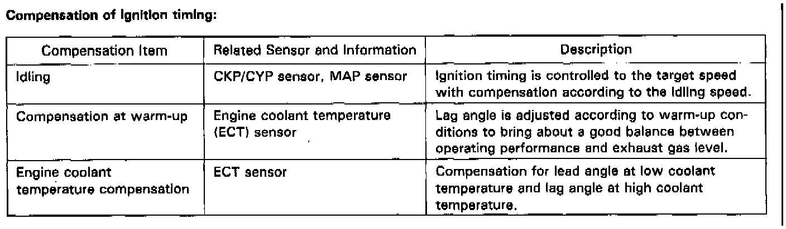

Ignition System: Description and Operation

Ignition Timing Control:
The programmed ignition used in this engine provides optimum control of ignition timing. A microcomputer determines the timing in response to engine speed and manifold vacuum pressure. The input signals are transmitted by the cylinder position/crank position (CYP/CKP) sensor, throttle position sensor, radiator fan control sensor, and manifold absolute pressure sensor. This system, not dependent on a governor or vacuum diaphragm, is capable of setting lead angles with complicated characteristics which cannot be provided by conventional governors or diaphragms.
Basic Control

- Determination of ignition timing/current duration:
The ECM has stored within it the optimum basic ignition timing for operating conditions based upon engine speed and intake manifold pressure. With compensation by signals from sensors, the system determines optimum timing for ambient conditions and sends voltage pulses to the ignition control module.
Control at Start
Ignition timing is fixed at 7° BTDC for cranking. The cranking is detected by the CYP sensor (cranking rpm) and starter signal.